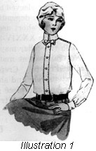
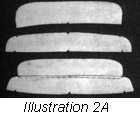
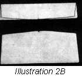
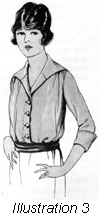

1926—The New-Way Course in Fashionable Clothes-Making
Lesson 34—Tailored Blouses
When the Tailored Blouse is Worn
To the business woman who wishes to be smart yet inconspicuous, well-dressed yet not elaborately dressed—there is nothing quite as appropriate and satisfactory as the tailored blouse. It is an indispensable item in her wardrobe. Not only is it a smart, neat garment for business wear, but it has the added advantage of being inexpensive. One may have as many as four or five attractive blouses for what one impractical dress would cost ready-made. And the making of these tailored blouses is really quite interesting.
The very charm of the tailored blouse lies in its utter simplicity. It should be devoid of all trimming. Only the tiniest of tucks or the neatest of plaited ruffles may be used to relieve the severity of the style. To be strictly tailored, of course, the blouse should be long-sleeved and high-necked; but here one has the choice of a high neck, depending upon which is most becoming. A stout woman with a short neck should never wear a high-collared blouse. In Illustration 34-3 is shown a practical type of tailored blouse in which the collar may be worn either high or low.
No transparent material of any kind may be used in making a tailored blouse. Crepe de chine is an excellent material, linen is used extensively and shirting silks and satins are appropriate. A trip through the piece goods department of any department store will reveal many attractive novelty materials appropriate for tailored blouses.
Use of the Pattern
You have now reached the stage in your study of clothes-making where you will want to select your own styles and alter the patterns to suit your own requirements.
Select a tailored blouse pattern that appeals to you. Be sure that the pattern you buy is as near your own size as possible. Always avoid a pattern that is smaller than your measure, if it is possible; if your bust measure is 35 choose a 36 pattern. It is a great deal easier to make a pattern smaller than it is to make it larger.
There are several types of professional patterns being sold which have no construction guides or directions of any kind. These patterns are meant only for those who are expert in clothes-making and do not need explicit directions. Avoid them. Insist upon getting the kind of pattern that has a construction guide or full directions.
If you find that the pattern you have bought is rather complicated and you do not feel confident that you will be able to alter it satisfactorily over your loose model lining or your measures, try this plan. Cut one-half of the pattern in crinoline, if the pattern is alike on both sides, or cut both sides if they differ. Fit this crinoline model, altering it along the lines laid down in Lesson 20. Use the crinoline model as your pattern from which to cut the material later. After you have had a great deal of experience in fitting and altering patterns this will be unnecessary, but for the present (and especially when you are using expensive material) you will find this method a great help and convenience.
Now let us see how the tailored blouse is made. Follow the detailed instructions carefully, carrying out each step in its correct sequence. You will find that, except for several slight differences, the making of the tailored blouse parallels closely the making of the lingerie blouse. However, instead of using simply the pattern as we did in the lingerie blouse, we are now going to make the tailored blouse using the model waist lining as a pattern.
If your material is wide enough to cut both fronts from one width and both sleeves from one width, you will need two and one-quarter yards of material. Material that is one yard wide will be satisfactory for the average sized woman. If your bust measure is over 40 you will need material that is wider, or you will require more in length.
- Your blouse will either open in the front under a box-plait or button through the box plait. In the former case, make a plait and opening as taught in Lesson 10, under the heading "Closing under a box plait." In the latter case, make an underturning to the wrong side on the edge of the material the width that the box plait is to be. Make a second turning to the wrong side exactly where the edge of the material comes. This plait must be made as long as the waist pattern from the shoulder at the neckline to the bottom of the blouse. Stitch through the three thicknesses at the second turning, making the stitching any desired distance from the edge. Now turn the plait out so that this stitching forms a tuck which turns toward the center of the material. Proceed to stitch along the first turning the same distance from the edge as the first stitching is. You now have your box plait and you have completed the first important step in the construction of the tailored blouse.
- The opposite edge of the material must now be finished. Make a narrow hem—it should be at least a quarter of an inch narrower than the box plait.
- Place the two edges together, the edge of the hem coming exactly to the outside stitching on the box plait. With their wrong sides together, pin these two parts the full length of the plait. Be sure that this is done evenly.
- Place the center front of the loose model pattern on the center of the box plait. This must be done in such a manner that the right side of the box plait is on the outside when this part of the blouse is placed against the right side of the body. Thus we are sure that when the blouse is finished it will lap from right to left. It should be place width the large part of the pattern toward the cut end of the material, if the plait was made in the proper edge of the material.
- Pin the remaining piece of the pattern in position before any of the parts are cut.
- Fold the material through the center and place the back of the pattern on it. In placing this part of the pattern on the material, make sure that the shoulders fit up into the portion from which the armcye was cut. This saves several inches of the cloth which could not otherwise be saved.
- Place the sleeves on the folded material. This should be done below the back of the waist.
- Be sure that before the pattern is removed all construction marks are made, and the center of the front and the center of the back are marked. Baste the waist together according to these construction marks. Use tailored seams in making underarm and shoulder seams.
- At this time it is wise to fit the waist on yourself or on the form over the fitted lining. Be sure that the proportions are correct, and that the finished blouse will fit well. In stitching the seams, use the French seam.
- The bottom of the blouse is finished as the lingerie blouse was. (SeeLesson 32.) In tailored blouses, it is best to allow about three inches below the waistline if possible.
- If the sleeve seam and underarm seam are to match, as they do in many tailored waists, the sleeve will be basted in the armcye after the shoulder seam is finished and the underarm seam and the sleeve seam is then stitched in one long seam. If the sleeve and underarm seams do not match, these seams will be finished and the sleeves then placed in the armcyes.
- Baste in the sleeves and try on the blouse to see if they are basted in correctly. The sleeves are very important in the tailored blouse and they should fit perfectly. You will have no trouble if you have marked the construction marks on the model lining as well as the blouse itself. Very often, in making sleeves for a tailored blouse, beginners make the mistake of having the seam too far to the front. To remedy this, if you find that you have made this mistake, simply move the sleeve seam closer to the underarm seam. There should be no fulness at the top of the sleeve, and it should be put in the armcye with a tailored seam.
Making the Collar and Cuffs (Illustrations 34-1, 2 and 3)
In a tailored blouse, the collar and cuffs play an important part. They must be neat, faultlessly made and correctly attached. Let us take up the making of these two important parts separately with an entirely new set of step-by-step directions.
- Of course, even before you reach this point the sleeve plackets will have been made. (Lesson 10.) The cuffs are merely straight pieces of material, seven inches wide and eleven inches long. The fulness in the bottom of the sleeve is arranged in a small space on both sides of the placket. These gathers must be very slight and evenly distributed—otherwise they will not look well. The cuffs are made double, baste on the sleeve with the right side of the cuff to the right side of the sleeve, and stitch on with a plain seam. The loose edge is faced down to cover the seam. The cuff turns back upon itself and buttonholes are then worked through the edge in four places. Link cuff buttons are used with this type of cuff.
- For making the collar, we suggest that you put the waist on the form over the fitted, padded lining (this lining should have a high collar fitted to it). Cut your collar first from some inexpensive, waste material; this may later be used as a pattern for the actual collar.
- Nurses and other professional women sometimes prefer to wear linen collars such as men wear. The neck-band for these collars may be purchased at a notion counter—they are quite inexpensive. To make them is a great deal of trouble. If you wish, the neck-band portion of the tailored collar may be used if made narrower, and serves the purpose very well.
- Let us first see how this neck-band or standing part of the collar is made. Presuming that the waist is on the figure, the shoulders finished, and the neck-line in place, take a straight lengthwise piece of waste material as wide as you want the collar to be high, and about three inches longer than the finished collar will be.
- Pin this around the neck, allowing it to drop at the front so that it fits closely around the neck at the top. For the average neck, there will be about a half-inch taken off the bottom of the collar at the center front and this will graduate to nothing at or near the shoulder seam.
- Allow the pattern to extend to the edge of the box plait on the right side, and to the edge of the hem on the left side. Be sure that from the center front to the ends of the neck band, the curve is the same as from the center front to the other edge of the box plait. At the bottom of this neck band, when properly closed, the measure should exactly correspond with the neck measure taken at the collar line. Of course, you must remember to make all seam allowances when cutting the collar.
- You have now completed the neck-band or standing part of the collar, and are ready to cut the turn-over part. Once again, take a piece of material and pin it around the neck at the top of the neck-band. Allow it to drop slightly at the front in order that the circle may be larger at the bottom than at the top. The turnover must be at least one-quarter of an inch wider than the neck band when finished. The ends of the collar should come exactly to the center front at the top and slant out a little at the bottom. If you wish you may have round corners, although the square corner is also quite attractive on the tailored blouse.
- Take the waist off the form. Baste the pattern together and baste the collar on to the waist. Try it on and make any changes you think necessary. If the collar is too loose at the top, the neck-band needs to be dropped slightly more at the front. The ends of the neck-band must be rounded off as in Illustration 34-2., Fig. A. Do not be discouraged if your first collar doesn't fit well. The collar is one of the most difficult things to make in the tailored blouse and almost everyone has trouble with it at first. Just discard the wrong collar, use waste material to make another one being sure to avoid the mistakes made in the first—and keep on practicing until you have made a perfect collar.
- Now make the actual collar from the blouse material. To make the turn-over part of the collar, place the right sides of two pieces of material together and on this the interlining. Stitch along the lower edge and the ends, making a plain seam the exact width allowed for a seam. The interlining may be of the blouse material or of other material of the same weight.
- Reverse to the right side and baste the edges in an even line. The blouse material should now be on the right side, with the interlining between the two thicknesses. In stitching the edges together, use the same kind of stitching as was used in the box plait.
- In making the neck-band, use two thicknesses of the blouse material and one of the material used for interlining. In applying the turn-over to the neck-band, insert the upper edge of the turnover part between the right sides at the upper edges of the two pieces of the blouse material of the neck band. Illustration 34-2, Fig. A. Stitch from the end of the collar straight around the top through the six thicknesses of the collar band and turn-over.
- Now turn the neck-band right side out, baste and stitch very closely to the top edge to hold the collar firm and tight.
- Attach the lower edge of the neck-line of the blouse, putting it on as a sewed-on extension facing (Lesson 8) making the center front and center back of the collar match the center front and back of the waist.
- In the right hand end of the collar, and in the box plait or fly at the front, work neat buttonholes and sew buttons in their correct places. The button holes must be placed so the fastening comes in the exact center front.
- When finished and attached, the collar should turn over and hide the neck band and line of attachment.
-  Perhaps you would like to make the type of collar which may be worn either open or closed. In this case, take a piece of waste material twice as wide as the collar is high, plus seam allowance at the edges of the collar. Pin this on the dress form over the fitted lining, dropping it from the shoulder seam to the center front in order that the collar may fit closely at the top. This collar must come to the center of the box plait and allowance made here for a finish. Illustration 34-2, Fig. B. When you are sure that you have made a perfect-fitting collar of the waste material, cut the actual collar from two thicknesses of the blouse material stitched in a plain seam with the right sides together.
- This type of collar is applied to the neck-line as a sewed-on extension facing and stitched around the edge to match the stitching around the front of the waist. If preferred, it may remain unstitched.
-  Many neat and smart trimming touches may be added to the tailored blouse to relieve the severity of the style. For instance, the front of the blouse may have narrow tucks running from the neck-line to the bottom, on either side of the box plait. These tucks should be put in before the waist is cut. The tucks are neatest and most tailored when made with the attachment on the sewing machine; if made by hand, they should be very straight, even and finely stitched. If a group of three or four tucks are used, they should be very close together and evenly made. Sometimes the box-plait is edged all around with a tiny plaited ruffle. The stout woman will find that a tailored blouse made with groups of tucks is very much more becoming to her than a plain blouse with the box plait in the center.
You should now be able to make tailored blouses. You may now buy any pretty tailored blouse pattern you see, and with it as a style and fitting base, create a smart blouse that you will be proud to wear. Of course, to be able to do this, you must have followed each step carefully and actually carried it out.
At business, on a shopping trip, with one's new tailored suit—there can be nothing more smart and attractive than a blouse such as you have just been taught to make. There is a certain dignity to the tailored blouse, a certain inimitable smartness that is difficult to achieve in the daintiest, fluffiest creations. I may not be appropriate for the ballroom or the theatre—but is there anything more suitable for occasions when you want to appear well-dressed, yet neat and tailored?
Learn thoroughly how to make the tailored blouse, before you begin the next lesson. Make one, perhaps of a pretty novelty cotton material—and when you have confidence in yourself, make one of pretty crepe de chine. One may be simple and untrimmed, with a collar that may be worn open or closed. The other may be smart with groups of tucks down the front and when you want a tailored blouse you will be able to make it—proceed with the following lesson.
We cannot over emphasize the fact that practice makes perfect. You want to be an expert clothes-maker. Then do not deny yourself of the value of practice, but keep on practicing and re-practicing each step until you have positively and permanently mastered it.